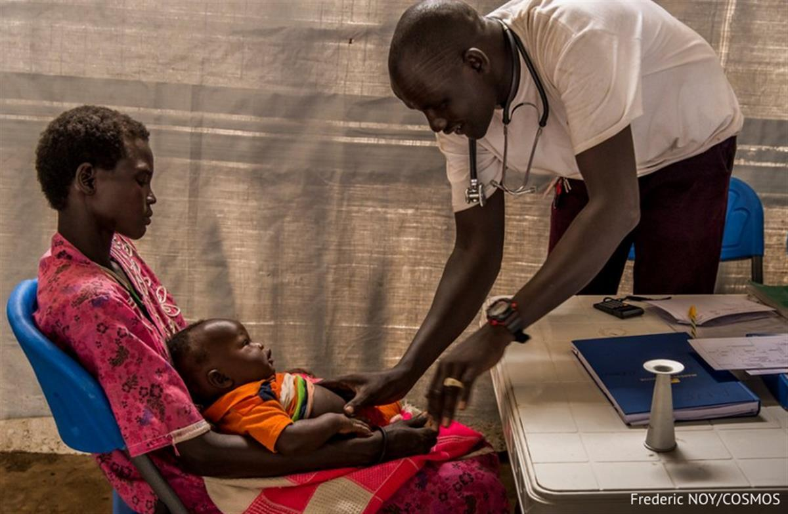
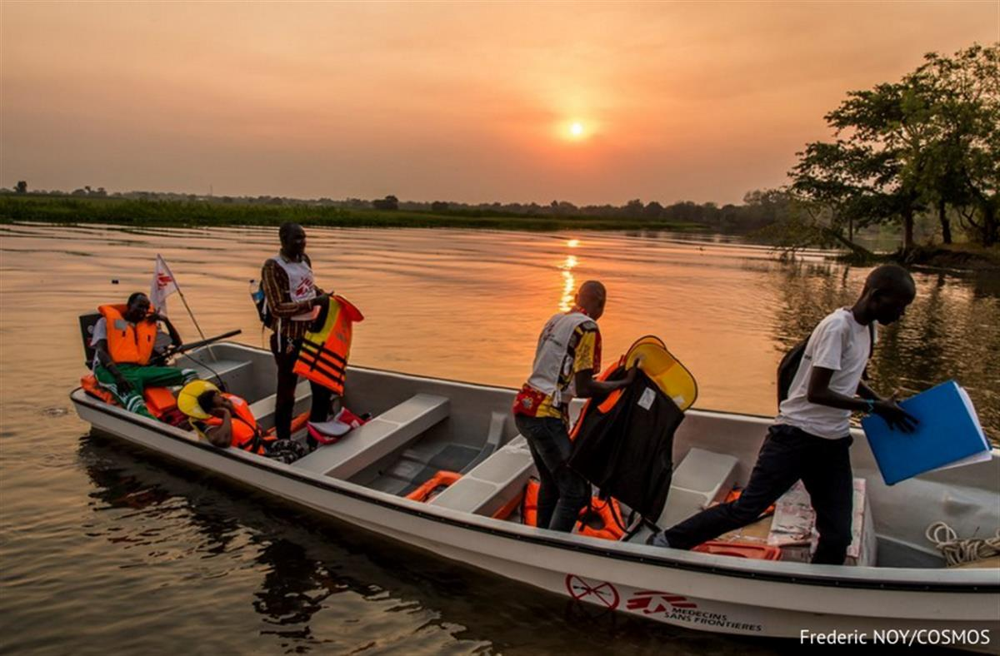

18 Mar 19
Thok JohnsonSouth Sudanese Medical coordinator Afghanistan
After his family were forced to flee violence in South Sudan, Thok Johnson spent his childhood surviving in the harsh conditions of a refugee camp – an experience that would inspire him to one day become an MSF nurse. Now a medical coordinator, working in humanitarian emergencies across the globe, he shares his remarkable story.
Thok Johnson MSF medical coordinator
A refugee camp is not an ideal place for a child to grow up. Insufficient food, inadequate shelter and medical care, as well as lack of education, are all typical in a refugee camp.
That is where I grew up.
My eyes become teary whenever I remember my childhood. It was filled with distress, misery and hopelessness.
My name is Thok Johnson Gony. I was born in Bor, in the greater upper Nile region of what was then Sudan, in 1975 – three years after the signing of a peace agreement, which ended the first Sudan civil war.
Uncertain whether the peace would hold, my family moved to Itang refugee camp in Ethiopia, where I started my primary school education.
“A life not worthy for a child”
As a child refugee, I almost lost my life to measles. Living today is itself a miracle.
I went through a lot of suffering. My eyes become teary whenever I remember my childhood. It was filled with distress, misery and hopelessness in the refugee camp.
We depended on humanitarian agencies for food and shelter. For social cohesion, we looked up to host communities who sometimes were hostile towards us.
Often enough life tosses you along like a fretful stream moving among rocky boulders. It’s a life not worthy for a child.'
Finding my purpose
In the face of all this suffering at a tender age, I learned that I should have a purpose in life.
I cleared my mind of the anguish that was consuming me. As a result, I started excelling in school, one educational level after another.

An MSF nurse treats a six-month-old boy suffering from pneumonia in Meer, South Sudan
Growing up seeing medical professionals saving lives in the refugee camp, including my own, deeply moved me. Their empathy inspired me a lot.
At that point, I decided I would become a medical professional. I believed through medical practice, I would return the favour once extended to me when I needed help the most.
The burning desire to directly help people in need of medical care became my greatest motivation.
I couldn’t believe that my hard work had won out over my childhood suffering.
After getting my bachelor’s degree in nursing, I started working with MSF in 2000 at Akobo Hospital which borders Ethiopia. I worked in various departments including epidemic interventions, nutrition and medical emergency department.
I then worked with MSF in other locations. One of the most remarkable experiences I recall was with MSF in the town of Maban, just after South Sudan attained independence from Sudan. I remember the influx of returnees and the multitude of medical cases we had to attend.
Realising the dream
Working alongside professionals from different parts of the world enhanced my expertise and taught me the beauty of humanity. I wanted to travel far to help those in need.

A medical team arrives back at base in Akobo, South Sudan, after carrying out a mobile clinic in a remote area
In 2010, I applied to become part of MSF’s international staff. However, when the news came that I was successful, I had mixed feelings.
First, I couldn’t believe that my hard work had won out over my childhood suffering. Secondly, I was excited because I knew I was to carry the flag of South Sudan into the international humanitarian world as a healthcare provider – my childhood dream.
The whole day a smile flashed over my face, like sunshine over a flower.
A great journey
The eagerness to go for my first assignment started growing.
I imagined, as a professional, how life would be in a foreign country and how I would connect with fellow international staff from other parts of the world. How would the host community perceive me? All these were questions that lingered in my mind heightening my excited nervousness.
Since 2012, I have been undertaking assignments in different MSF projects around the world,
I have grown within the organisation, from a medical staff member to now become the Medical Coordinator in Afghanistan – where, among other activities, we opened a project which provides care to people with drug-resistant tuberculosis (DRTB).
My experience in all the countries I have worked is a true manifestation that South Sudan is full of professionals who can work in any part of the world.
From a child refugee to an international medical coordinator. Isn’t it a great journey?